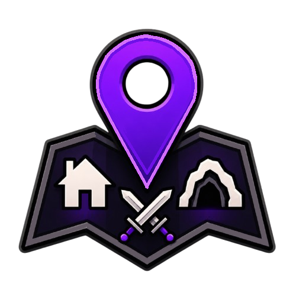

<!doctype html>
<html lang="en">
<head>
    <meta charset="utf-8">
    <meta name="viewport" content="width=device-width, initial-scale=1">
    <title>WaypointsPlus</title>
    <link rel="icon" type="image/png" href="./assets/logo.png">
    <style>
        :root {
            color-scheme: dark;
            --page: #0b0b10;
            --panel: #15151d;
            --panel-hover: #1d1d28;
            --border: #39394a;
            --accent: #ca6521;
            --text: #eeeeF3;
            --muted: #9999a8;
        }

        * { box-sizing: border-box; }

        body {
            margin: 0;
            min-height: 100vh;
            background: var(--page);
            color: var(--text);
            font: 16px/1.55 system-ui, -apple-system, BlinkMacSystemFont, "Segoe UI", sans-serif;
        }

        .layout {
            display: grid;
            grid-template-columns: minmax(230px, 300px) minmax(0, 760px);
            gap: 36px;
            width: min(1120px, calc(100% - 32px));
            margin: 0 auto;
            padding: 48px 0;
        }

        aside {
            position: sticky;
            top: 24px;
            align-self: start;
        }

        h1, h2 { line-height: 1.2; }
        h1 { margin: 0 0 6px; font-size: 25px; }
        h2 { margin: 0 0 20px; font-size: 29px; }
        h3 { margin: 26px 0 10px; font-size: 19px; }
        p { margin: 0 0 16px; }
        li { margin-bottom: 7px; }

        .brand {
            display: flex;
            align-items: center;
            gap: 10px;
            margin-bottom: 6px;
        }

        .brand img {
            width: 38px;
            height: 38px;
            object-fit: contain;
        }

        .brand h1 { margin: 0; }

        .subtitle {
            margin-bottom: 22px;
            color: var(--muted);
        }

        .languages {
            display: flex;
            gap: 8px;
            margin-bottom: 16px;
        }

        .languages a {
            color: var(--muted);
            text-decoration: none;
        }

        .languages a.active { color: var(--accent); }

        #search {
            width: 100%;
            height: 40px;
            margin-bottom: 12px;
            padding: 0 12px;
            border: 1px solid var(--border);
            border-radius: 7px;
            outline: none;
            background: var(--panel);
            color: var(--text);
        }

        #search:focus { border-color: var(--accent); }

        #results {
            display: grid;
            gap: 6px;
        }

        .article-link {
            width: 100%;
            padding: 10px 12px;
            border: 0;
            border-radius: 6px;
            background: transparent;
            color: var(--muted);
            font: inherit;
            text-align: left;
            cursor: pointer;
        }

        .article-link:hover,
        .article-link.active {
            background: var(--panel-hover);
            color: var(--text);
        }

        article {
            min-height: 260px;
            padding: 30px;
            border: 1px solid var(--border);
            border-radius: 10px;
            background: var(--panel);
        }

        footer {
            grid-column: 2;
            padding: 18px 4px 0;
            border-top: 1px solid var(--border);
            color: var(--muted);
            font-size: 13px;
        }

        footer p { margin: 0; }
        footer p + p { margin-top: 10px; }

        .empty { color: var(--muted); }

        code {
            padding: 2px 5px;
            border-radius: 4px;
            background: #242430;
            color: #ffd4b8;
        }

        @media (max-width: 720px) {
            .layout {
                grid-template-columns: 1fr;
                gap: 24px;
                padding: 24px 0;
            }

            aside { position: static; }
            article { padding: 22px; }
            footer { grid-column: 1; }
        }
    </style>
</head>
<body>
<main class="layout">
    <aside>
        <div class="brand">
            
            <h1>Waypoints Plus</h1>
        </div>
        <div class="subtitle" id="documentation-label"></div>
        <nav class="languages" aria-label="Language">
            <a href="?lang=en" data-language="en">English</a>
            <span>·</span>
            <a href="?lang=pl" data-language="pl">Polski</a>
        </nav>
        <input id="search" type="search" autocomplete="off">
        <div id="results"></div>
    </aside>

    <article id="article"></article>
    <footer id="footer"></footer>
</main>

<script>
    const articles = [
        {
            id: "getting-started",
            title: {
                en: "Getting Started",
                pl: "Pierwsze kroki"
            },
            content: {
                en: `<p>Open Minecraft Controls and find the <strong>Waypoints Plus</strong> category.</p>
                     <p>Press <code>B</code> to create a waypoint and <code>;</code> to manage saved waypoints. See <a href="./index.html?lang=en#controls">Controls</a> for every available keybind.</p>
                     <p>The mod also offers original tools designed for PvP communities, including configurable <a href="./index.html?lang=en#fight-alerts">Fight Alerts</a>.</p>`,
                pl: `<p>Otwórz sterowanie Minecrafta i znajdź kategorię <strong>Waypoints Plus</strong>.</p>
                     <p>Naciśnij <code>B</code>, aby utworzyć waypoint, albo <code>;</code>, aby zarządzać zapisanymi waypointami. Zajrzyj do artykułu <a href="./index.html?lang=pl#controls">Sterowanie</a>, aby poznać wszystkie dostępne bindy.</p>
                     <p>Mod oferuje również oryginalne rozwiązania stworzone z myślą o społeczności PvP, między innymi konfigurowalne <a href="./index.html?lang=pl#fight-alerts">Alerty walki</a>.</p>`
            }
        },
        {
            id: "controls",
            title: {
                en: "Controls",
                pl: "Sterowanie"
            },
            content: {
                en: `<p>All keybinds are available in Minecraft Controls under the <strong>Waypoints Plus</strong> category.</p>

                     <h3>Default controls</h3>
                     <ul>
                         <li><strong>Create Waypoint</strong> <-- <code>B</code></li>
                         <li><strong>Manage Waypoints</strong> <-- <code>;</code></li>
                         <li><strong>Previous Waypoint Profile</strong> <-- <code>Left Arrow</code></li>
                         <li><strong>Next Waypoint Profile</strong> <-- <code>Right Arrow</code></li>
                         <li><strong>Reload Waypoints From File</strong> <-- unassigned</li>
                         <li><strong>Create Waypoint From Clipboard</strong> <-- unassigned</li>
                         <li><strong>Copy Current Position</strong> <-- unassigned</li>
                     </ul>
                     <p>Clipboard keybinds are explained in <a href="./index.html?lang=en#fast-waypoints">Fast Waypoints</a>.</p>
                     <p>Every key can be changed or removed in Minecraft Controls.</p>`,

                pl: `<p>Wszystkie bindy znajdują się w sterowaniu Minecrafta w kategorii <strong>Waypoints Plus</strong>.</p>

                     <h3>Domyślne sterowanie</h3>
                     <ul>
                         <li><strong>Utwórz waypoint</strong> <-- <code>B</code></li>
                         <li><strong>Zarządzaj waypointami</strong> <-- <code>;</code></li>
                         <li><strong>Poprzedni profil waypointów</strong> <-- <code>Strzałka w lewo</code></li>
                         <li><strong>Następny profil waypointów</strong> <-- <code>Strzałka w prawo</code></li>
                         <li><strong>Odśwież waypointy z pliku</strong> <-- nieprzypisany</li>
                         <li><strong>Stwórz waypoint na podstawie schowka</strong> <-- nieprzypisany</li>
                         <li><strong>Kopiuj aktualną pozycję</strong> <-- nieprzypisany</li>
                     </ul>
                     <p>Bindy korzystające ze schowka opisano w artykule <a href="./index.html?lang=pl#fast-waypoints">Szybkie waypointy</a>.</p>
                     <p>Każdy bind można zmienić lub usunąć w sterowaniu Minecrafta.</p>`
            }
        },
        {
            id: "profiles",
            title: {
                en: "Waypoint Profiles",
                pl: "Profile waypointów"
            },
            content: {
                en: `<p>Profiles keep separate waypoint sets on the same server or singleplayer world.</p>`,
                pl: `<p>Profile pozwalają przechowywać oddzielne zestawy waypointów na tym samym serwerze lub świecie singleplayer.</p>`
            }
        },
        {
            id: "fast-waypoints",
            title: {
                en: "Fast Waypoints",
                pl: "Szybkie waypointy"
            },
            content: {
                en: `<p>Fast Waypoints let you copy coordinates and create a waypoint from clipboard text without opening a menu.</p>

                     <h3>Setup</h3>
                     <ol>
                         <li>Open Minecraft Controls and find the <strong>Waypoints Plus</strong> category.</li>
                         <li>Assign keys to <strong>Copy Current Position</strong> and <strong>Create Waypoint From Clipboard</strong>. Both are unassigned by default.</li>
                     </ol>

                     <h3>Copy and create</h3>
                     <p><strong>Copy Current Position</strong> copies your block coordinates in this format:</p>
                     <p><code>100 64 -250 Coords</code></p>
                     <p>You can paste the line elsewhere, change its name and copy it again. Press <strong>Create Waypoint From Clipboard</strong> to add it instantly to the active profile and current dimension.</p>
                     <p>The name is optional. Without one, the waypoint is named <strong>Quick Waypoint</strong>. Spaces, commas and semicolons are accepted as coordinate separators.</p>

                     <h3>Validation</h3>
                     <p>The clipboard must contain three integer coordinates followed by an optional name and may not exceed 65 characters. Invalid text is ignored, and an identical waypoint is not created twice.</p>`,

                pl: `<p>Szybkie waypointy pozwalają kopiować koordynaty i tworzyć waypoint ze schowka bez otwierania żadnego okna.</p>

                     <h3>Konfiguracja</h3>
                     <ol>
                         <li>Otwórz sterowanie Minecrafta i znajdź kategorię <strong>Waypoints Plus</strong>.</li>
                         <li>Przypisz klawisze do opcji <strong>Kopiuj aktualną pozycję</strong> oraz <strong>Stwórz waypoint na podstawie schowka</strong>. Oba bindy są domyślnie nieprzypisane.</li>
                     </ol>

                     <h3>Kopiowanie i tworzenie</h3>
                     <p><strong>Kopiuj aktualną pozycję</strong> zapisuje w schowku koordynaty blokowe w formacie:</p>
                     <p><code>100 64 -250 Koordynaty</code></p>
                     <p>Możesz wkleić ten wiersz, zmienić nazwę i ponownie go skopiować. Naciśnij <strong>Stwórz waypoint na podstawie schowka</strong>, aby natychmiast dodać go do aktywnego profilu i aktualnego wymiaru.</p>
                     <p>Nazwa jest opcjonalna. Jeśli jej zabraknie, waypoint otrzyma nazwę <strong>Szybki waypoint</strong>. Jako separatory koordynatów można stosować spacje, przecinki i średniki.</p>

                     <h3>Sprawdzanie danych</h3>
                     <p>Schowek musi zawierać trzy całkowite koordynaty i opcjonalną nazwę, a cały wpis może mieć maksymalnie 65 znaków. Nieprawidłowy tekst jest ignorowany, a identyczny waypoint nie zostanie utworzony ponownie.</p>`
            }
        },
        {
            id: "settings",
            title: {
                en: "Settings",
                pl: "Ustawienia"
            },
            content: {
                en: `<p>Open the waypoint manager and select <strong>Settings</strong>. Visual settings are shared between profiles.</p>

                     <h3>Waypoint Settings</h3>
                     <ul>
                         <li><strong>Language</strong> <-- switches the interface between English and Polish.</li>
                         <li><strong>Background</strong> <-- shows or hides the label background.</li>
                         <li><strong>Coordinates</strong> <-- shows waypoint coordinates on its label.</li>
                         <li><strong>Distance</strong> <-- shows the distance to the waypoint.</li>
                         <li><strong>Laser</strong> <-- shows a colored world-space beam at the waypoint.</li>
                     </ul>

                     <h3>Advanced Settings</h3>
                     <ul>
                         <li><strong>Fight Alerts</strong> <-- opens the alert manager. <a href="./index.html?lang=en#fight-alerts">More</a></li>
                         <li><strong>Blurred Background</strong> <-- controls the darkened or blurred backdrop behind mod menus. The exact effect depends on the Minecraft version.</li>
                         <li><strong>Cross-dimensional</strong> <-- displays compatible waypoints between dimensions, including the vanilla Overworld–Nether 8:1 conversion.</li>
                         <li><strong>Scale</strong> <-- changes waypoint label size from <code>0.25</code> to <code>4.0</code>.</li>
                         <li><strong>Default Text</strong> <-- sets the default text color in eight-digit ARGB format.</li>
                         <li><strong>Default Background</strong> <-- sets the default label background color in ARGB format.</li>
                         <li><strong>Marker Tint (%)</strong> <-- blends the marker color into the background from <code>0</code> to <code>100</code>.</li>
                         <li><strong>Match Text To Border</strong> <-- uses each waypoint's border color for its text.</li>
                     </ul>
                     <p>ARGB uses the format <code>AARRGGBB</code>, where the first two characters control opacity. Use <strong>Palette</strong> for visual color selection.</p>

                     <h3>Saving changes</h3>
                     <p><strong>Not Saved</strong> means there are pending changes. Select it to save them. <strong>Reset Settings</strong> restores defaults but still requires saving. Leaving without saving restores the previous values.</p>`,

                pl: `<p>Otwórz listę waypointów i wybierz <strong>Ustawienia</strong>. Ustawienia wyglądu są wspólne dla wszystkich profili.</p>

                     <h3>Ustawienia waypointów</h3>
                     <ul>
                         <li><strong>Język</strong> <-- przełącza interfejs między językiem polskim i angielskim.</li>
                         <li><strong>Tło</strong> <-- pokazuje lub ukrywa tło etykiety.</li>
                         <li><strong>Koordynaty</strong> <-- wyświetla koordynaty na etykiecie waypointa.</li>
                         <li><strong>Odległość</strong> <-- wyświetla odległość od waypointa.</li>
                         <li><strong>Laser</strong> <-- wyświetla kolorową wiązkę w świecie w miejscu waypointa.</li>
                     </ul>

                     <h3>Ustawienia zaawansowane</h3>
                     <ul>
                         <li><strong>Alerty walki</strong> <-- otwiera menedżer alertów. <a href="./index.html?lang=pl#fight-alerts">Więcej</a></li>
                         <li><strong>Rozmyte tło</strong> <-- steruje przyciemnionym lub rozmytym tłem za oknami moda. Dokładny efekt zależy od wersji Minecrafta.</li>
                         <li><strong>Między wymiarami</strong> <-- wyświetla zgodne waypointy pomiędzy wymiarami, w tym z przelicznikiem Overworld–Nether <code>8:1</code>.</li>
                         <li><strong>Skala</strong> <-- zmienia wielkość etykiet waypointów w zakresie od <code>0,25</code> do <code>4,0</code>.</li>
                         <li><strong>Domyślny tekst</strong> <-- ustawia domyślny kolor tekstu w ośmiocyfrowym formacie ARGB.</li>
                         <li><strong>Domyślne tło</strong> <-- ustawia domyślny kolor tła etykiety w formacie ARGB.</li>
                         <li><strong>Zabarwienie znacznika (%)</strong> <-- miesza kolor znacznika z tłem w zakresie od <code>0</code> do <code>100</code>.</li>
                         <li><strong>Dopasuj tekst do obramowania</strong> <-- używa koloru obramowania waypointa również dla jego tekstu.</li>
                     </ul>
                     <p>Format ARGB ma postać <code>AARRGGBB</code>, a pierwsze dwa znaki odpowiadają za przezroczystość. Przycisk <strong>Paleta</strong> pozwala wybrać kolor wizualnie.</p>

                     <h3>Zapisywanie zmian</h3>
                     <p><strong>Niezapisane</strong> oznacza oczekujące zmiany. Kliknij ten przycisk, aby je zapisać. <strong>Resetuj ustawienia</strong> przywraca wartości domyślne, ale nadal wymaga zapisania. Wyjście bez zapisu przywraca poprzednie wartości.</p>`
            }
        },
        {
            id: "fight-alerts",
            title: {
                en: "Fight Alerts",
                pl: "Alerty walki"
            },
            content: {
                en: `<p>Fight Alerts send a prepared message to a Discord channel after an in-game trigger.</p>

                     <h3>Creating an alert</h3>
                     <ol>
                         <li>Open <strong>Waypoint Settings --> Advanced Settings --> Fight Alerts</strong>.</li>
                         <li>Select <strong>[+]</strong> and enter a name for the alert.</li>
                         <li>Select Discord, choose a trigger and enter your webhook URL.</li>
                         <li>Write the message, then select <strong>Test</strong> or <strong>Create</strong>.</li>
                     </ol>

                     <h3>Triggers</h3>
                     <ul>
                         <li><strong>Single Press</strong>  <-- sends the alert after one key press.</li>
                         <li><strong>Key Combination</strong>  <-- uses up to four keys pressed together.</li>
                         <li><strong>Multi-Press</strong>  <-- sends after the selected number of presses within 10–50000 ms. (recommended)</li>
                     </ul>

                     <h3>Message variables</h3>
                     <ul>
                         <li><code>$X</code>, <code>$Y</code>, <code>$Z</code>  <-- current coordinates.</li>
                         <li><code>$SERVER</code>  <-- current server.</li>
                         <li><code>$PLAYER</code>  <-- player name.</li>
                         <li><code>$HP</code>  <-- current and maximum health, including absorption.</li>
                         <li><code>$OPPONENT_COUNT</code>  <-- number of players attacked during the last minute.</li>
                         <li><code>$OPPONENTS</code>  <-- names of those players.</li>
                         <li><code>$GAPPLES</code>, <code>$NOTCH</code>, <code>$PEARLS</code>, <code>$TOTEMS</code>  <-- item counts.</li>
                         <li><code>$DURABILITY</code>  <-- remaining armor durability.</li>
                         <li><code>$FAST_WAYPOINT</code>  <-- adds a ready-to-copy Fast Waypoint line at the end.</li>
                     </ul>
                     <p>Write <code>\\$X</code> when the message should contain the literal text <code>$X</code>.</p>

                     <h3>Webhook safety</h3>
                     <p>A Discord webhook URL allows messages to be sent to its channel. Do not publish or share it. Alert settings are stored locally in <code>config/waypointsplus/fight-alerts.json</code>.</p>`,

                pl: `<p>Alerty walki wysyłają przygotowaną wiadomość na kanał Discord po wykonaniu wybranego działania w grze.</p>

                     <h3>Tworzenie alertu</h3>
                     <ol>
                         <li>Otwórz <strong>Ustawienia waypointów --> Ustawienia zaawansowane --> Alerty walki</strong>.</li>
                         <li>Wybierz <strong>[+]</strong> i wpisz nazwę alertu.</li>
                         <li>Wybierz Discord, ustaw trigger i wklej adres webhooka.</li>
                         <li>Wpisz wiadomość, a następnie wybierz <strong>Test</strong> lub <strong>Utwórz</strong>.</li>
                     </ol>

                     <h3>Triggery</h3>
                     <ul>
                         <li><strong>Pojedyncze naciśnięcie</strong>  <-- wysyła alert po jednym naciśnięciu klawisza.</li>
                         <li><strong>Kombinacja klawiszy</strong>  <-- pozwala użyć maksymalnie czterech klawiszy jednocześnie.</li>
                         <li><strong>Wielokrotne naciśnięcie</strong>  <-- wysyła alert po wymaganej liczbie naciśnięć w czasie 10–50000 ms. (Zalecane)</li>
                     </ul>

                     <h3>Zmienne wiadomości</h3>
                     <ul>
                         <li><code>$X</code>, <code>$Y</code>, <code>$Z</code>  <-- aktualne koordynaty.</li>
                         <li><code>$SERVER</code>  <-- aktualny serwer.</li>
                         <li><code>$PLAYER</code>  <-- nick gracza.</li>
                         <li><code>$HP</code>  <-- aktualne i maksymalne zdrowie razem ze złotymi sercami.</li>
                         <li><code>$OPPONENT_COUNT</code>  <-- liczba graczy zaatakowanych w ostatniej minucie.</li>
                         <li><code>$OPPONENTS</code>  <-- nicki tych graczy.</li>
                         <li><code>$GAPPLES</code>, <code>$NOTCH</code>, <code>$PEARLS</code>, <code>$TOTEMS</code>  <-- liczba przedmiotów.</li>
                         <li><code>$DURABILITY</code>  <-- pozostała wytrzymałość pancerza.</li>
                         <li><code>$FAST_WAYPOINT</code>  <-- dodaje na końcu gotowy do skopiowania wpis Fast Waypoint.</li>
                     </ul>
                     <p>Wpisz <code>\\$X</code>, jeśli wiadomość ma zawierać zwykły tekst <code>$X</code>.</p>

                     <h3>Bezpieczeństwo webhooka</h3>
                     <p>Adres webhooka Discord pozwala wysyłać wiadomości na jego kanał. Nie publikuj go ani nikomu nie udostępniaj. Alerty są przechowywane lokalnie w <code>config/waypointsplus/fight-alerts.json</code>.</p>`
            }
        }
    ];

    const params = new URLSearchParams(location.search);
    const language = params.get("lang") === "pl" || params.has("pl") ? "pl" : "en";
    const text = language === "pl"
        ? {
            documentation: "Dokumentacja",
            search: "Szukaj artykułów…",
            empty: "Nie znaleziono artykułów.",
            footer: "Nie miałem jeszcze wystarczająco dużo czasu, aby przygotować pełną wersję tej strony, a zależało mi, by dokumentacja wszystkich funkcji była dostępna już teraz. Dlatego obecny układ został tymczasowo przygotowany na podstawie szablonu wygenerowanego z pomocą AI. Treść dokumentacji jest rozwijana i weryfikowana wraz z projektem.",
            contact: "Mam nadzieję, że tymczasowa forma strony nie stanowi problemu. Wszelkie uwagi i niedogodności można zgłaszać na Discordzie pod nickiem"
        }
        : {
            documentation: "Documentation",
            search: "Search articles…",
            empty: "No articles found.",
            footer: "I have not yet had enough time to prepare the complete version of this website, but I wanted documentation for every feature to be available now. The current layout was therefore created temporarily from an AI-assisted template. The documentation itself is being expanded and verified alongside the project.",
            contact: "I hope this temporary version of the website does not cause any inconvenience. Feedback and issues can be reported on Discord to"
        };

    document.documentElement.lang = language;
    document.title = "WaypointsPlus";
    document.querySelector("#documentation-label").textContent = text.documentation;
    document.querySelector("#search").placeholder = text.search;
    const footer = document.querySelector("#footer");
    const footerInfo = document.createElement("p");
    footerInfo.textContent = text.footer;
    const footerContact = document.createElement("p");
    footerContact.append(`${text.contact} `);
    const discordName = document.createElement("code");
    discordName.textContent = "slogers";
    footerContact.append(discordName, ".");
    footer.append(footerInfo, footerContact);
    document.querySelector(`[data-language="${language}"]`).classList.add("active");

    const search = document.querySelector("#search");
    const results = document.querySelector("#results");
    const article = document.querySelector("#article");
    let selectedId = location.hash.slice(1);

    function matchingArticles() {
        const query = search.value.trim().toLocaleLowerCase(language);
        return articles.filter(item => item.title[language].toLocaleLowerCase(language).includes(query));
    }

    function showArticle(item) {
        selectedId = item.id;
        history.replaceState(null, "", `${location.pathname}${location.search}#${item.id}`);
        article.innerHTML = `<h2>${item.title[language]}</h2>${item.content[language]}`;
        renderResults();
    }

    function renderResults() {
        const matches = matchingArticles();
        results.replaceChildren();

        for (const item of matches) {
            const button = document.createElement("button");
            button.type = "button";
            button.className = `article-link${item.id === selectedId ? " active" : ""}`;
            button.textContent = item.title[language];
            button.addEventListener("click", () => showArticle(item));
            results.append(button);
        }

        if (matches.length === 0) {
            const message = document.createElement("div");
            message.className = "empty";
            message.textContent = text.empty;
            results.append(message);
        }
    }

    search.addEventListener("input", renderResults);

    window.addEventListener("hashchange", () => {
        const target = articles.find(item => item.id === location.hash.slice(1));
        if (target && target.id !== selectedId) showArticle(target);
    });

    const initialArticle = articles.find(item => item.id === selectedId) || articles[0];
    showArticle(initialArticle);
</script>
</body>
</html>
